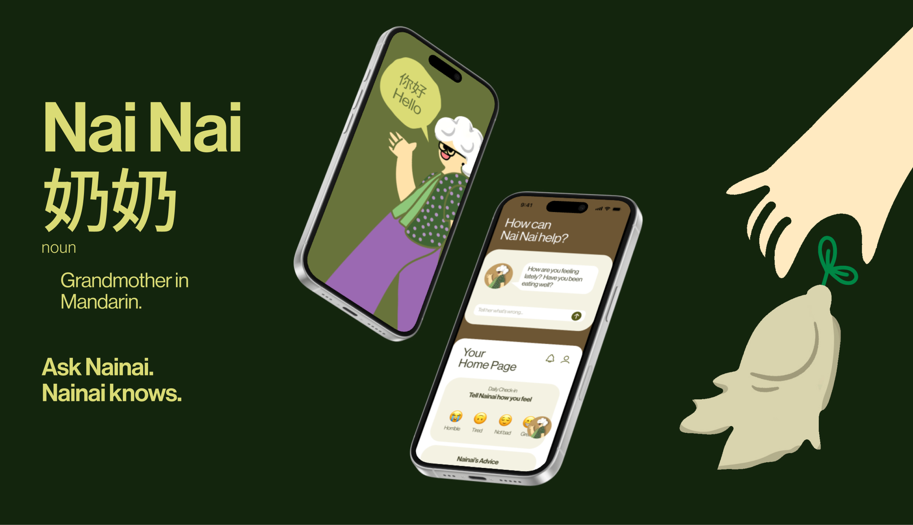

No. 01
WINNER — CISSA
Classification: Healthcare Companion

NAI NAI — Your Virtual Grandma
Nearly a third of Australians live outside major cities, where healthcare access is thinner and the Traditional Chinese Medicine workforce is shrinking and ageing fast. Nai Nai is a concept for a warm, grandmotherly guide that turns a daily check-in into safe, community-vetted home remedies — built to close a trust gap, not just an information one.
Read the full case study →